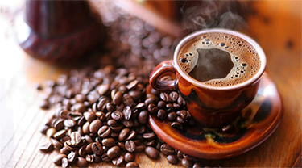
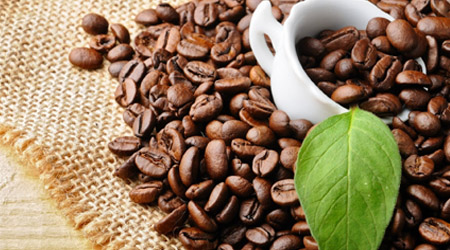
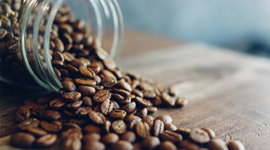
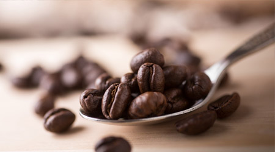
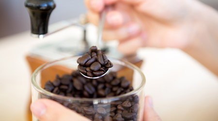

Là loại cà phê hạt hơi dài, được trồng ở độ cao trên 600m, khí hậu mát mẻ, được trồng chủ yếu ở Braxin, và chiếm tới 2/3 lượng cà phê hiện nay trên thế giới.
Cách chế biến mới là điểm tạo ra sự khác biệt giữa Arabica va Robusta. Quả Arabica được thu hoạch, rồi lên men (ngâm nước cho nở...) rồi rửa sạch rồi sấy. Chính vì thế, vị của Arabica hơi chua, và đây cũng được coi là 1 đặc điểm cảm quan của loại cà phê này. Vì thế, nói đến "hậu vị" của cà phê là có thật, nhưng không phải là vị chua, mà phải chuyển từ chua sang đắng (kiểu socola ý, sau khi nuốt mới là cà phê ngon). Người ta thường ví vị chua đó giống như khi mình ăn chanh, sẽ thấy rất chua, nhưng lập tức thấy được vị đắng của vỏ. Cách cảm nhận vị chua của cà phê cũng như vậy.
Robusta là một trong các loại cà phê rất thích hợp với khí hậu, thổ nhưỡng tại vùng Tây Nguyên Việt Nam nhất là vùng đất bazan (Gia lai, Đắclắc) – hằng năm đạt 90-95% tổng sản lượng cà phê Việt Nam, mùi thơm nồng, không chua, độ cafein cao, thích hợp với khẩu vị người Việt, nhưng quá đậm đặc với người nước ngoài.
Trồng cà phê Robusta phải thâm canh mới đạt được năng suất cao vì trái đậu trên cành một lần, phải tạo cành mới (cành thứ cấp 1,2,3…). để đạt được yếu tố này, người nông dân phải có vốn, một kiến thức cơ bản. Thường thì mới năm thứ hai-thời kỳ kiến thiết cơ bản-người trồng đã thu hoạch, không hãm ngọn sớm nên đến năm thứ 1 kinh doanh (năm thứ 3 của cây trồng) cây đã yếu, có hình tán dù, thiếu cành thứ cấp.
Hạt nhỏ hơn Arabica, và được sấy trực tiếp, chứ không phải lên men, vị đắng chiếm chủ yếu, loại này uống đậm đà hơn. Được trồng ở độ cao dưới 600m, khí hậu nhiệt đới, vì thế có mặt ở nhiều nước hơn ( Ở Việt Nam loại này chiếm hơn 90% ). Việt Nam có tổng lượng chiếm 1/3 lượng cà phê tiêu thụ trên toàn thế giới.
Trong các loại cafe việt nam thì Cherry hay còn gọi là cà phê mít gồm có 2 giống chính là Liberica và Exelsa. Loại này không được phổ biến lắm, nhưng đây là loại có khả năng chống chịu sâu bệnh rất tốt và năng suất rất cao. Được trồng ở những vùng đất khô đầy gió và nắng của vùng Cao Nguyên.
Cách chế biến mới là điểm tạo ra sự khác biệt giữa Arabica va Robusta. Quả Arabica được thu hoạch, rồi lên men (ngâm nước cho nở...) rồi rửa sạch rồi sấy. Chính vì thế, vị của Arabica hơi chua, và đây cũng được coi là 1 đặc điểm cảm quan của loại cà phê này. Vì thế, nói đến "hậu vị" của cà phê là có thật, nhưng không phải là vị chua, mà phải chuyển từ chua sang đắng (kiểu socola ý, sau khi nuốt mới là cà phê ngon). Người ta thường ví vị chua đó giống như khi mình ăn chanh, sẽ thấy rất chua, nhưng lập tức thấy được vị đắng của vỏ. Cách cảm nhận vị chua của cà phê cũng như vậy.
Nằm trong số các loại cà phê Việt Nam có hạt no tròn. Đặc biệt là trong một trái chỉ có duy nhất một hạt. Vị đắng gắt, hương thơm say đắm, hàm lượng cafein cao, nuớc màu đen sánh, đó là quá trình kết hợp tinh túy của sự duy nhất.
Moka là một trong các loại cà phê nổi tiếng thuộc chi Arabica, được người Pháp di thực từ những năm 30 của thế kỉ trước, trồng ở Đà Lạt – Lâm Đồng.
Trong các họ, giống cà phê này khó trồng nhất, đòi hỏi công chăm sóc rất kỹ, dể bị sâu bệnh, cần có điều kiện môi trường lẫn kỹ thuật chăm bón đặc thù, nhưng năng xuất lại rất ít. Cây cà phê Moka chỉ có thể sinh truởng và phát triển ở độ cao từ 1500m nên rất ít nơi trồng được. Hằng năm nước ta xuất khẩu trên một triệu tấn cà phê hầu như phần lớn là cà phê Robusta trồng ở Buôn Mê Thuộc và một số tỉnh khác. Cho nên, ở Việt Nnam Moka là cà phê quý hiếm, luôn có giá cao hơn các loại hạt cafe khác. Có thể thấy, không có nhiều người chúng ta có dịp thưởng Moka nguyên chất, dù trên thế giới tiêu thụ đến 80% cà phê Arabica, Moka.
Càng lên cao, cộng thêm với điều kiện thổ nhưỡng, canh tác phù hợp thì hương vị và chất lượng của Moka càng tuyệt vời. Chỉ ở vùng đất thuộc Thành phố Đà Lạt với độ cao 1600m là cà phê Moka thơm ngon nhất. Có thể nói Moka là hoàng hậu trong vương quốc các loại cafe, hạt Moka lớn và đẹp hơn nhiều so với giống khác, hương thơm của nó rất đặc biệt, rất sang trọng, ngây ngất, vị hơi chua một cách thanh thoát, dành cho người sành điệu. Một khi đã vui hưởng được hương vị đích thực của Moka rồi, người ta sẽ luôn nhớ đến nó hơn bất kỳ các loại cà phê nào. Moka thơm quý phái và có vị đặc trưng là khẩu vị lựa chọn hàng đầu của các nước Châu Âu và Mỹ.